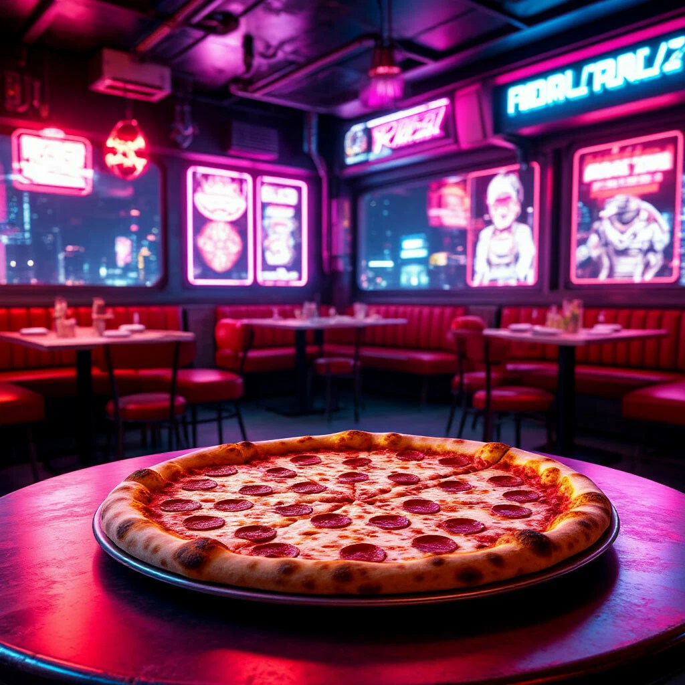

Представь мир, где итальянская кухня встретилась с высокими технологиями и киберпанком.
Встречайте — пицца «Киберони» (Cyberoni).
Она непростая, но очень вкусная!
Её предшественница -- пицца "Маргарита".

Ингредиенты:
Тесто
Томатный соус
Сыр моцарелла
Листья базилика